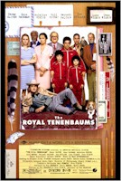

|  |
|
Cynthia Fuchs and Gregory Avery review
the new film from Wes
Anderson, The
Royal Tenenbaums.
- The Royal Tenenbaums
- Screenwriters Wes Anderson and Owen Wilson have crafted a precise and cutting examination of familial woes in The Royal Tenenbaums (for characters and viewers), but do so by means that are just a little too predictable to sustain the film's credibility.
- Cynthia Fuchs
- The Royal Tenenbaums
- The Royal Tenenbaums is a carefully constructed film with an ending that resembles a jigsaw puzzle with missing pieces rather than a sophisticated and witty tale about familial dysfunction.
|